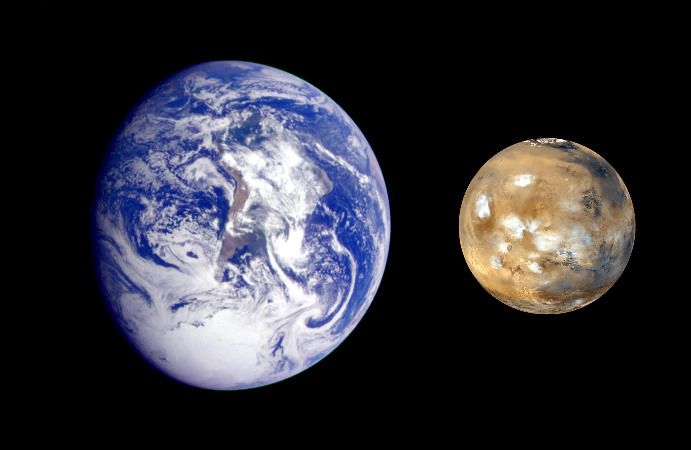
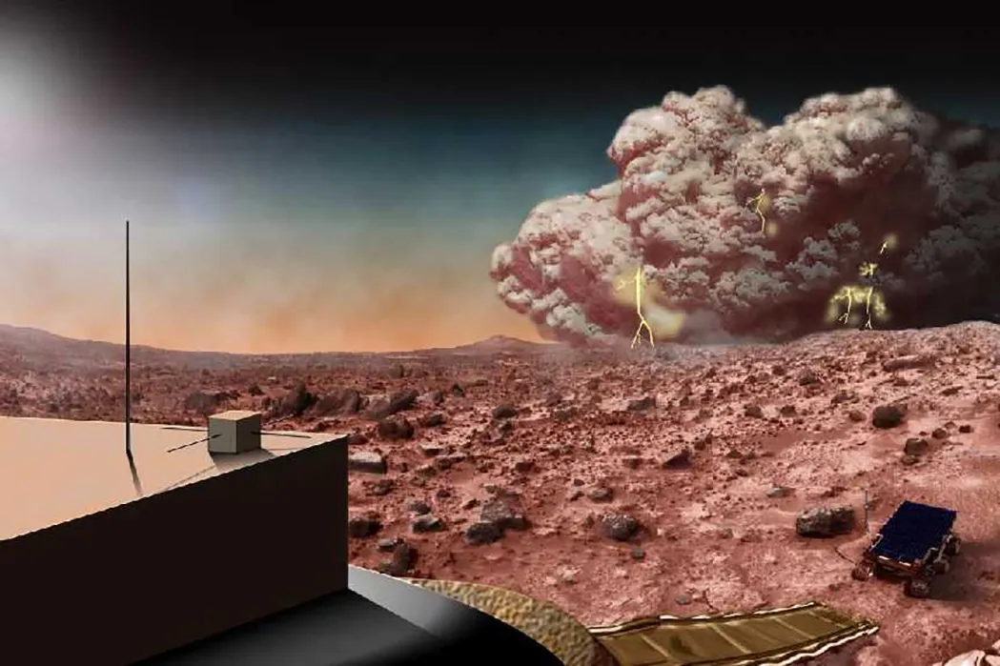
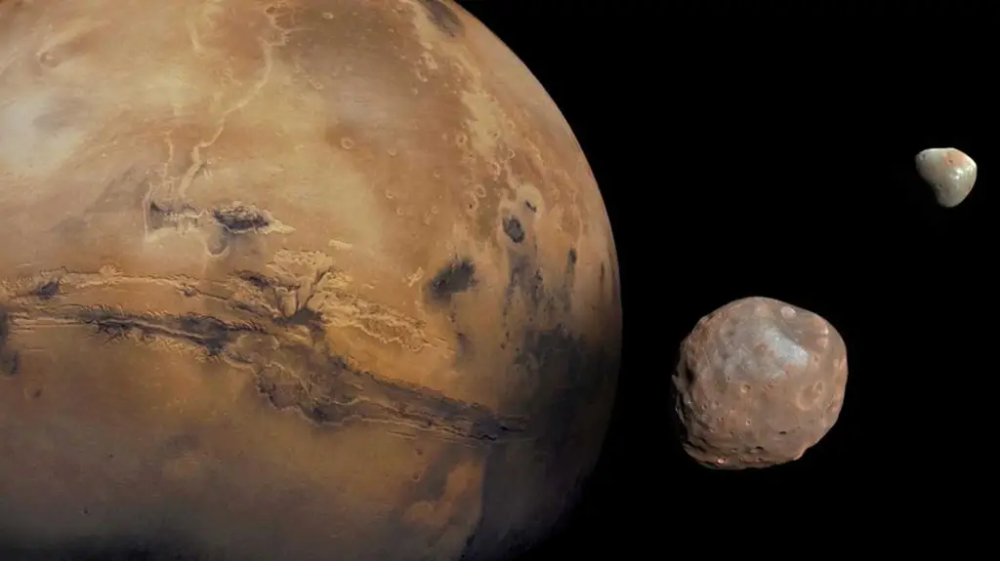

Welcome to the Mysterious Red Planet
Discover the secrets of our neighbor in the solar system - from its rusty landscapes to its potential for future human settlement.

Image credit: NASA
Mars at a Glance
Physical Characteristics
Mars is the fourth planet from the Sun with a diameter of approximately 6,779 kilometers (4,212 miles), about half the size of Earth.
Image credit: NASA
Climate
The Martian climate is much colder than Earth's, with temperatures ranging from -125°C to 20°C and frequent dust storms that can engulf the entire planet.
Image credit: NASA
Moons
Mars has two small moons named Phobos and Deimos, which are believed to be captured asteroids and are among the smallest moons in our solar system.
Image credit: NASA
Human Settlement Potential
Scientists and space agencies around the world are actively researching the possibility of establishing human settlements on Mars. The planet offers several resources that could support human life, including:
- Water ice at the poles and possibly underground
- Soil that could potentially be used for growing plants
- Materials for constructing habitats
However, significant challenges remain, including protection from radiation, adapting to reduced gravity, and creating sustainable life support systems.
Image credit: NASA